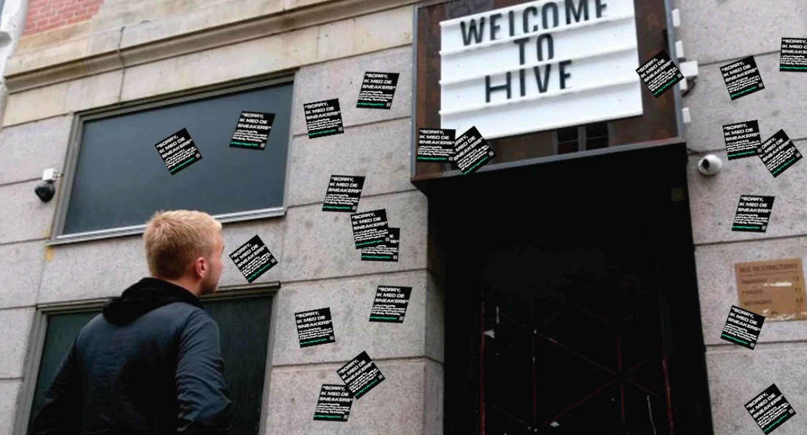
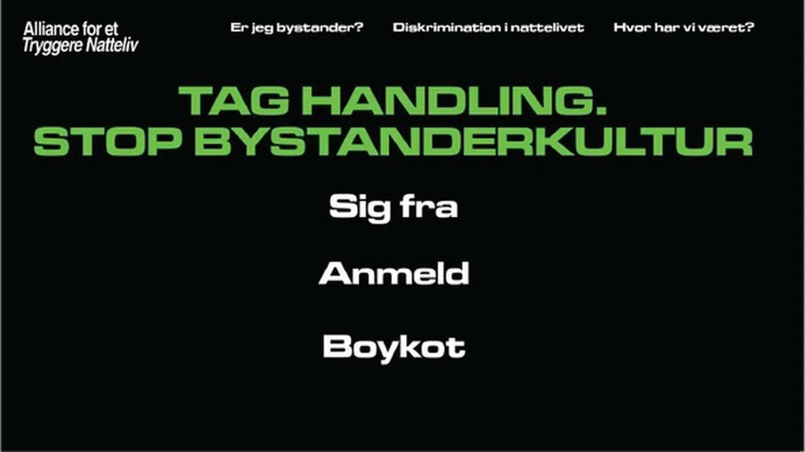
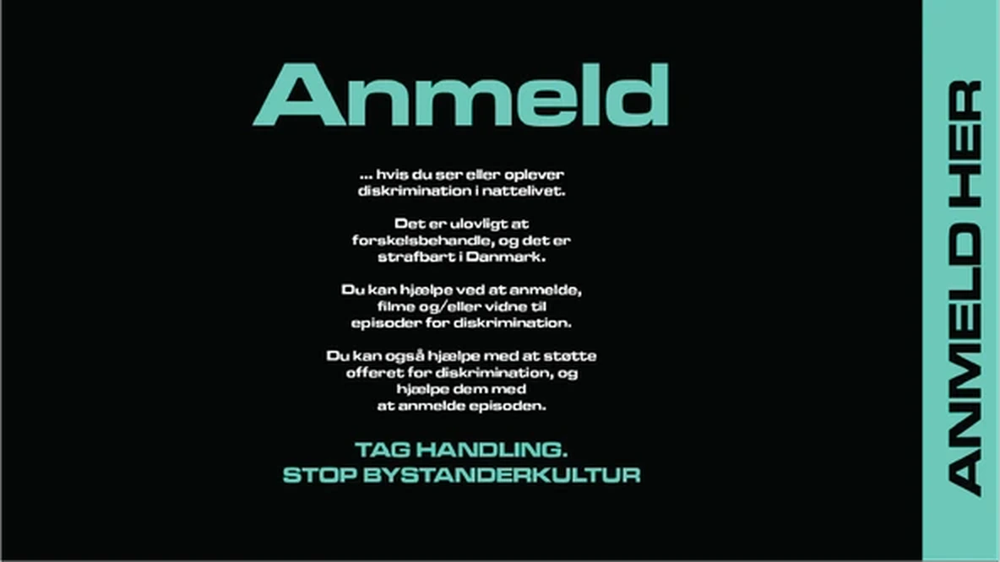
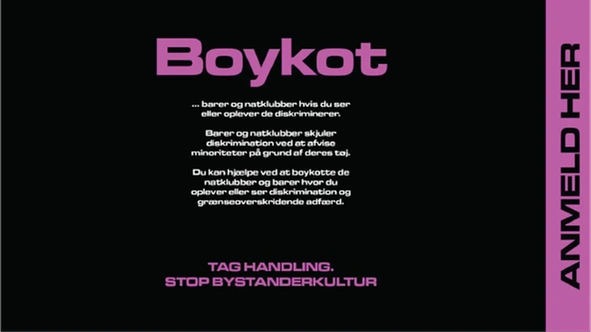

KØ-BAJEREN
Shortlist: Kravlingprisen 2024
Lavet med:
Caroline Berg Preisler, Frida Snekkerup and Victoria Møller Hale
Kontekst:
Når man går i byen i Danmark, er det meget almindeligt at drikke en øl i køen til natklubben.
Problem:
Natklubber i København afviser minoriteter baseret på køn, seksualitet, etnicitet osv., men begrunder afvisningen med andre undskyldninger som fx påklædning. Der opstår en slags "bystander-effekt" i køen, fordi folk er bange for selv at blive afvist og få ødelagt deres aften.
Indsigt:
Det mest ubehagelige ved at blive afvist er den manglende reaktion og tavsheden fra de andre i køen.
Idé:
En aktivistisk kommunikationskampagne, hvor øldåsen bliver mediet. Vi uddeler "købajeren" udenfor natklubber en fredag aften. Skjult under dåsens label er et budskab, der opfordrer folk til at tage stilling og sige fra, hvis de oplever eller selv bliver udsat for diskrimination i nattelivet.
Dåsen


Hvordan det fungerer
STEP 1
Pil label af dåsen
Fjern det ydre øl-label for at afdække det skjulte budskab

STEP 2
Fold label ud
Åbn det indre label og læs det aktivistiske budskab

STEP 3
Brug label som klistermærke
Placer klistermærket hvor du oplevede diskrimination

Hvis folk oplever diskrimination, vil vi opfordre dem til at handle – og placere klistermærket dér, hvor de oplevede diskriminationen.



